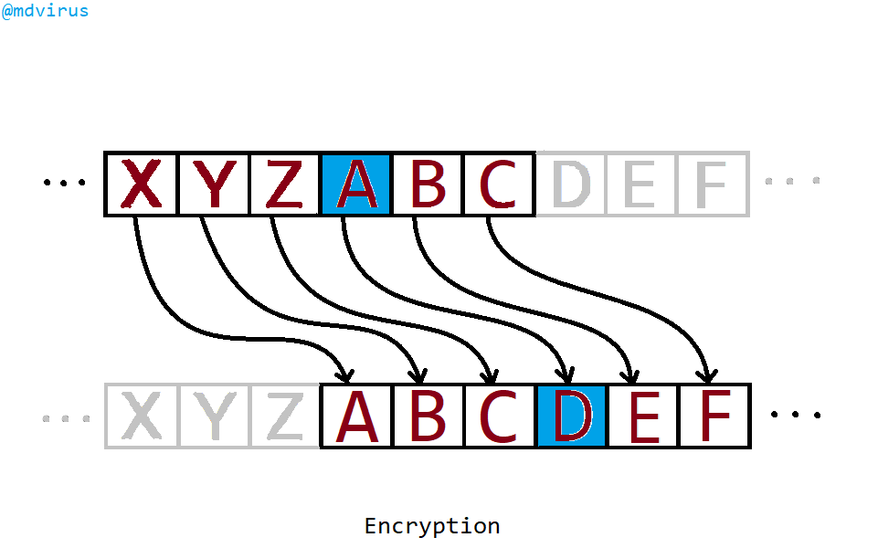
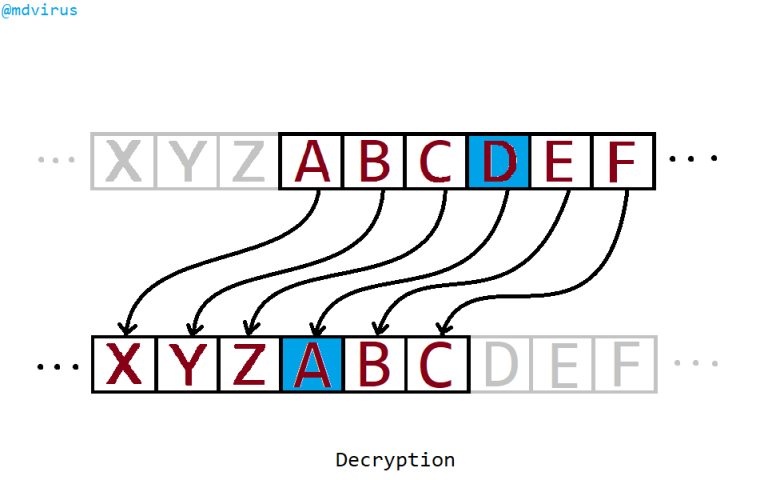

RHN TKX T ZXGBNL
উপরের মতো এরকম বিভিন্ন লেখা আপনি হরহামেশাই দেখে থাকেন, যেগুলোর আপাতদৃষ্টিতে কোনো মানে বোঝা যায় না। কিন্তু আসলেই এগুলোর মানে আছে। আজকে আমরা তা সম্পর্কে জানবো।
যুদ্ধের সময় এক রাজা তার সেনাপতি কে একটা গোপন চিঠি পাঠাবেন। সেনাপতির কাছে সেই চিঠি নিয়ে যাবে রাজার উজির। কিন্তু সমস্যা হল এই উজিরকে নিয়ে। উজিরের বদঅভ্যাস হল অন্যের চিঠি পড়া। কিন্তু এই চিঠিতে এতটাই গুরুত্বপূর্ণ এবং গোপনীয় তথ্য আছে যে এটা কোনো ভুল মানুষের হাতে পড়লে সমস্যা হতে পারে। তাই রাজা চান না যে উজির (বা সেনাপতি বাদে অন্য কেউ) তার চিঠি পড়ুক। কী করা যেতে পারে?
রাজা সিদ্ধান্ত নিলেন যে তিনি পুরো চিঠিটি ক্রিপ্টোগ্রাফির (Cryptography) সাহায্যে লিখবেন। ক্রিপ্টোগ্রাফি ব্যাপারটা অনেকটা এমন, রাজা একটা বাক্সের ভেতর চিঠিটা রেখে সেটা একটা কম্বিনেশন লক (ব্রিফকেসের গায়ে যেরকম নাম্বারওয়ালা লক থাকে) দিয়ে বন্দী করে দেবেন, যার কম্বিনেশনটা শুধু রাজা আর সেনাপতি জানেন। তারা দুজন ছাড়া ঐ বাক্সটা আর কেউ খুলতে পারবে না, কারণ আর কারও কাছে ঐ কম্বিনেশন নেই।
আমরা এখন যদি এই কম্বিনেশন লকের কথা ভুলে গিয়ে এর পরিবর্তে সাইফার (Cipher) নিয়ে চিন্তা করি তবে সেটাকেই বলা হবে ক্রিপ্টোগ্রাফি বা গুপ্ত-বার্তা বিদ্যা। সাইফার হচ্ছে অনেকটা ভার্চুয়াল তালার মতো, যেটার বাহ্যত কোনো আকার বা অস্তিত্ব নেই কিন্তু প্রয়োগ নীতি আছে। সাইফার মূলত কোনো লেখাকে উল্টেপাল্টে পরিবর্তন করে এমন একটা কিছু বানিয়ে ফেলে, যেটা দেখে আপাতত অর্থহীন আর বেখাপ্পা মনে হয়। কাজেই রাজা যদি সাইফার ব্যবহার করে চিঠিটি লেখেন তবে উজির যদি চিঠিটি পড়েও ফেলে, তার কাছে ঐ চিঠি হিজিবিজি ছাড়া আর কিছুই মনে হবে না। সে পড়তেও পারবে না।
ইতিহাসের পাতা ওল্টালে সর্বপ্রথম যে সাইফার সম্পর্কে জানা যায়, সেটি হলো সিজার সাইফার। সিজার সাইফার মূলত একধরনের বর্ণ প্রতিস্থাপন (Letter substitution) ভিত্তিক সাইফার, যার শুরুটা হয়েছিল সম্রাট জুলিয়াস সিজারের হাত ধরে, খ্রিষ্টপূর্ব আটান্ন সালের দিকে। তিনি তার চিঠির প্রতিটি বর্ণকে অন্য আরেকটি বর্ণ দিয়ে প্রতিস্থাপন করে দিতেন। এতে পুরো চিঠির চেহারাটাই পাল্টে যেত। ফলে অন্য কারো পক্ষে চিঠির বক্তব্য উদ্ধার করা সম্ভব ছিল না। সম্রাট এই কাজটি করতেন যাতে যুদ্ধক্ষেত্রে তাঁর নির্দেশ শত্রুপক্ষের হাতে পড়লেও তারা যেন কিছুতেই সেই নির্দেশ সম্পর্কে জানতে না পারে।
এখন রাজা এবং সেনাপতি যদি সিজার সাইফার ব্যবহার করে চিঠি চালাচালি করতে চায় তাহলে তাদের প্রথম কাজ হবে আগে থেকেই নিজেদের মধ্যে ১ থেকে ২৫ এর মধ্যে যেকোনো একটা সংখ্যা নির্দিষ্ট করে নেয়া। এই সংখ্যাটা তারা দুজন ছাড়া আর কেউ জানবে না। সংখ্যাটা ১ থেকে ২৫ এর মধ্যেই কেন হতে হবে? উত্তরটা সোজা, ইংরেজি বর্ণমালায় অক্ষর আছে ২৬টি (আর বাকিটা বোঝা যাবে একটু পরে)।
আপাতত আমরা বোঝার সুবিধার্থে একটা সংখ্যা ধরে নেই, ধরি সংখ্যাটি ৩। অর্থাৎ রাজা যদি সেনাপতিকে চিঠি পাঠায়, তাকে মূল চিঠির প্রতিটি অক্ষরের পরিবর্তে ইংরেজি বর্ণমালার তিন ঘর পরের অক্ষরটি ব্যবহার করতে হবে। তার মানে, চিঠির প্রতিটি A অক্ষরের পরিবর্তে D, B এর পরিবর্তে E, C এর পরিবর্তে F ব্যবহার করতে হবে। ঠিক তেমনি W এর পরিবর্তে Z, X এর পরিবর্তে A, Y এর পরিবর্তে B এবং Z এর পরিবর্তে C ব্যবহার করতে হবে। এভাবে পুরো চিঠি লেখা হলে রাজা তার উজির মারফত সেনাপতিকে চিঠিটি পাঠিয়ে দেবেন। এই যে রাজা সাইফার ব্যবহার করে চিঠিটি লিখে পাঠালেন, এটাকে বলে এনক্রিপশন (Encryption)। 
ধরা যাক রাজা পাঠাতে চান ATTACK OPPOSITIONS কথাটি। সিজার সাইফার দিয়ে তিন ঘর শিফটিং করলে লেখাটি হয়ে যাবে DWWDFN RSSRVLWLRQV. এই লেখাটি পাঠিয়ে দিলে, এই লেখা বুঝতে পারবে এমন সাধ্য কি উজিরের (কিংবা অন্য কারোর) আছে?
সেনাপতির কাছে চিঠিটি পৌঁছালে তার কাজ হবে রাজার ঠিক উল্টো কাজটা করা। অর্থাৎ প্রতিটি অক্ষরের পরিবর্তে তার তিন ঘর আগের অক্ষরটি ব্যবহার করলেই মূল অর্থ বের হয়ে আসবে। মূল অর্থ বের করার জন্য সেনাপতি যে কাজটি করল, এটাকে বলে ডিক্রিপশন (Decryption)। 
অর্থাৎ কস্মিনকালেও সেনাপতি বাদে অন্য কেউ তাদের চিঠি পড়তে পারবে না। পড়লেও তার অর্থ বুঝতে পারবে না। কিন্তু না, ব্যপারটা এরকম নয়। সিজার সাইফারের দুর্বলতাও আছে। সিজার সাইফার আবিষ্কারের প্রায় আট শ বছর পর, আবু ইউসুফ ইয়াকুব ইবনে ইসহাক আল-কিন্দি নামের একজন আরব মুসলিম গণিতবিদ এটার দুর্বলতা নিয়ে একটি গবেষণা প্রবন্ধ প্রকাশ করেন। তিনি সিজার সাইফারের দুর্বলতা খুঁজে বের করেন মূলত বিভিন্ন বইপত্র এবং অন্যান্য রচনায় ভাষার একটা গুরুত্বপূর্ণ বৈশিষ্ট্যের ওপর নির্ভর করে। বৈশিষ্টটা হলো বর্ণমালার সবগুলো অক্ষরের আনুপাতিক পরিমাণ ও তুলনা।
আপনি যদি কোনো বই, পত্রপত্রিকা ইত্যাদি থেকে এর সবগুলো ব্যবহৃত বর্ণের ব্যবহার সংখ্যা (Frequency of letters) গোনেন, তবে দেখতে পারবেন এই সংখ্যাগুলো সমান নয়। হয়তো সবচেয়ে বার পাবেন E, T, A, অক্ষরগুলি। আবার সবচেয়ে কম বার পাবেন Z, Q, X, J অক্ষরগুলি (ইংরেজি ভাষার ক্ষেত্রে)। এই বৈশিষ্ট্যকে বলা হয় যেকোনো বর্ণমালার ফিঙ্গারপ্রিন্ট। প্রতিটি ভাষার বর্ণমালার এ রকম ফিঙ্গারপ্রিন্ট থাকবেই, কারণ সব অক্ষরের ব্যবহার অবশ্যই সুষম নয়।
অর্থাৎ আপনার কাছে যদি একটি বই বা চিঠি থাকে, যার পুরোটাই সিজার সাইফার ব্যবহার করে লেখা, বইটা ডিক্রিপ্ট করার জন্য আপনার প্রথম কাজ হবে ঐ বইয়ে বা চিঠিতে ব্যবহৃত সর্বোচ্চ অক্ষরটি খুঁজে বের করা। ধরুন আপনি সর্বোচ্চবার খুঁজে পেলেন H অক্ষরটি। তাহলে আপনি মোটামুটি নিশ্চিত থাকতে পারেন যে ওটাই মূল লেখার E. এরপর বাকিগুলো ডিক্রিপ্ট করে ফেলতে পারবেন। তাছাড়া আপনি যদি ঐ বই/চিঠির কয়েকটি লাইন নিয়ে একবার ১ করে লেফট শিফট করে, তারপর ২ করে লেফট শিফট করে, তারপর ৩, ৪,.. করে লেফট শিফট করতে করতে ২৫ পর্যন্ত লেফট শিফট করেন তবে এক পর্যায়ে আপনি বুঝতে পারবেন কোন সংখ্যা ধরে পুরোটা ডিক্রিপ্ট করতে হবে (এটা খুবই সময়সাপেক্ষ ব্যাপার)।
মূলত এই দুর্বলতা প্রকাশ পাওয়ার পরপরই ধীরে ধীরে সিজার সাইফারের ব্যবহার মোটামুটি বিলুপ্ত হয়ে যায়। তবে গুপ্ত-বার্তা বিদ্যা থেমে থাকে নি। আরো জটিল জটিল এনক্রিপশন পদ্ধতি আবিষ্কৃত হয়েছে এবং এসব ব্যবহার করেই আজকের পৃথিবীতে তথ্য আদান প্রদান, যোগাযোগ ইত্যাদি হচ্ছে (পরবর্তীতে আমি এসব সম্পর্কে লিখব ইনশাআল্লাহ)।
আরো বিস্তারিত জানতে দেখুনঃ-
Support the community